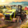

 Farming Simulator 25
Detalles
 |
|
| Tiempo de juego | No Jugado |
| Última actividad | Nunca |
| Añadido | 11/19/2024 20:40:50 |
| Modificado | 11/20/2024 17:52:35 |
| Estado de finalización | Not Played |
| Librería | Playnite |
| Fuente | 2TB DATOS |
| Plataforma | Macintosh PC (Windows) |
| Fecha de lanzamiento | 11/12/2024 |
| Puntuación de la Comunidad | 72 |
| Puntuación de la Crítica | |
| Puntuación de usuario | |
| Género | Simuladores |
| Desarrollador | Giants Software |
| Editor | Giants Software |
| Característica | Cloud Saves Compat. Total Con Mando Cooperativo Cooperativo En Línea Logros De Multijugador Préstamo Familiar Un Jugador |
| Enlaces | Punto de encuentro Discusiones Guías Noticias Página de la tienda PCGamingWiki Logros |
| Tag | 3D Agrícolas Ambientales Construcción Cooperativos en línea Economía Física Gestión Gestión del tiempo Modificables Multijugador Naturaleza Primera persona Realistas Relajantes Simulación Simulador agrícola Simulador inmersivo Tercera persona Un jugador |
Descripción
¡Disfruta de la vida en la granja con Farming Simulator 25! Construye tu legado en solitario o de forma cooperativa en modo multijugador. En tu granja, tú decides.

¡Esta granja es tuya!
Construye una granja junto a ríos sinuosos y elevadores de grano históricos en América del Norte, rodeada de estanques en Europa central o en un paisaje exuberante de Asia oriental repleto de arrozales junto a una ciudad portuaria iluminada con luces de neón. Cultiva, cría animales, practica la silvicultura y gestiona un imperio agrícola formado por tiendas, producciones y construcciones.

Condiciones climáticas cambiantes que deforman el terreno
Los tornados y el granizo añaden nuevos desafíos y obligan a los granjeros a prepararse y evaluar el impacto en sus cultivos. Ahora, los neumáticos causan impacto debido a la deformación del terreno. Además, hay un montón de efectos meteorológicos nuevos que le dan un toque romántico e inmersivo a tu granja. ¡Empieza el día con rayos de sol que atraviesan las copas de los árboles y tiñen de dorado la niebla matutina!

Agricultura asiática, cultivos y animales nuevos
Cultiva dos tipos de arroz en arrozales inundados o bien espinacas, guisantes y judías verdes; la lista de cultivos crece en Farming Simulator 25 y alcanza los 25 cultivos en total. Disfruta de una variedad aún mayor con varias especies de árboles y hortalizas de invernadero. La agricultura asiática llega al juego: recorre tus campos operando nuevos tipos de equipo y cría búfalos y cabras, que llegan a tus pastos y recintos y se unen a las vacas, las ovejas, los cerdos, los pollos, los caballos y demás ganado. ¡Y también crías de animales!

Maquinaria auténtica con GPS
Cultiva con precisión gracias a la dirección asistida por GPS y la automatización mejorada. Opera más de 400 vehículos y herramientas auténticos de más de 150 marcas internacionales líderes como Case IH, CLAAS, Fendt, John Deere, Kubota, Massey Ferguson, New Holland, Valtra y muchas más. ¡Escoge tu marca favorita o descubre tecnologías nuevas y emocionantes!

Mejoras en la calidad de la agricultura
Conecta de manera más profunda con los campos y la naturaleza gracias a una actualización tecnológica general con gráficos y físicas mejorados basados en el último Engine 10 de GIANTS. La accesibilidad mejorada y las funciones de calidad de vida hacen que Farming Simulator 25 sea ideal tanto para granjeros novatos como experimentados. Por si fuera poco, ¡descárgate creaciones de usuarios aprobadas por los desarrolladores en ModHub dentro del juego!